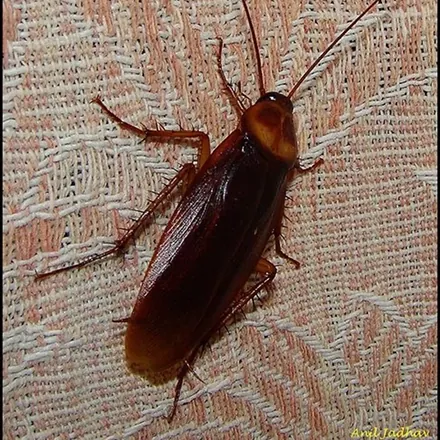
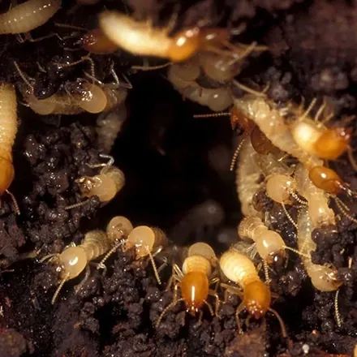
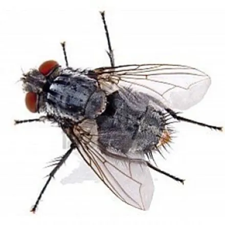
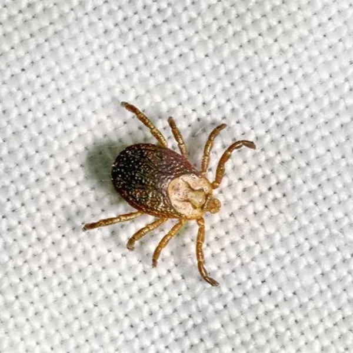
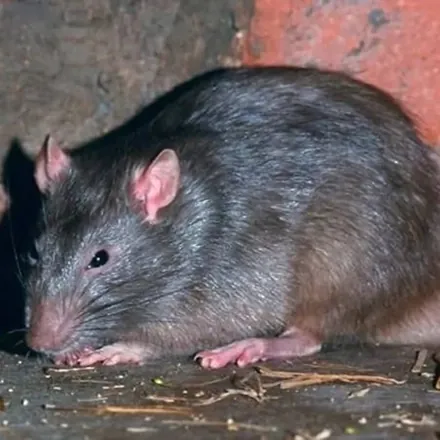

جدیدترین مقاله
جدیدترین مقاله
دفع مورچه از خانه: راهنمای کامل سمپاشی مورچه
چرا مورچهها بعد از اسپری زدن دوباره برمیگردند؟ پاسخ در لانهای است که نمیبینید. در این راهنما انواع مورچههای خانگی رایج در ایران، دلیل ورودشان به خانه و روش طعمهگذاری تخصصی که سم را به ملکه میرساند را کامل بررسی میکنیم.
همهی مقالات

سمپاشی و دفع ساس: راهنمای کامل
نشانههای آلودگی به ساس تخت، تفاوت گزش آن با پشه و کک و دلیل شکست روشهای خانگی در برابر این حشرهی سرسخت خونخوار.

سمپاشی و دفع سوسک
سوسک ناقل دهها نوع باکتری است. راههای ورود سوسک به خانه، مخفیگاههای اصلی و روش ژلگذاری و سمپاشی تضمینی را بشناسید.

سمپاشی و دفع موریانه
موریانه بیصدا سازههای چوبی را از داخل میخورد. نشانههای حملهی موریانه و روشهای ریشهکنی تخصصی آن را در این راهنما بخوانید.

سمپاشی و دفع پشه
پشهها فقط مزاحم خواب نیستند؛ ناقل بیماری هم هستند. کانونهای تکثیر پشه در خانه و روشهای مهپاشی و سمپاشی مؤثر را بشناسید.

سمپاشی و دفع مگس
مگس با نشستن روی زباله و سپس غذا، آلودگی را مستقیم به سفرهی شما میآورد. راههای قطع چرخهی تکثیر مگس را در این مقاله بخوانید.

سمپاشی و دفع کنه
کنه ناقل بیماریهای جدی مانند تب کریمه کنگو است. راههای ورود کنه به خانه و حیاط و روشهای دفع اصولی آن را بشناسید.

دفع عقرب و روتیل
نیش عقرب و حضور روتیل در خانه میتواند خطرناک باشد. مخفیگاههای رایج و روشهای ایمنسازی منزل در برابر این بندپایان را بخوانید.

دفع موش و تلهگذاری جوندگان
موشها علاوه بر انتقال بیماری، به سیمکشی و لوازم خانه آسیب میزنند. روشهای تلهگذاری و طعمهگذاری اصولی جوندگان را بشناسید.

دفع مورچه از خانه
انواع مورچههای خانگی رایج در ایران، دلیل برگشتن مورچهها بعد از سم خانگی و روش طعمهگذاری تخصصی که به ملکه میرسد.
به مشاورهی تخصصی نیاز دارید؟
کارشناسان آرام محیط البرز با مجوز رسمی وزارت بهداشت، پیش از هر اقدامی بهصورت رایگان شرایط شما را بررسی میکنند و بهترین روش دفع آفات را پیشنهاد میدهند.